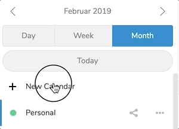
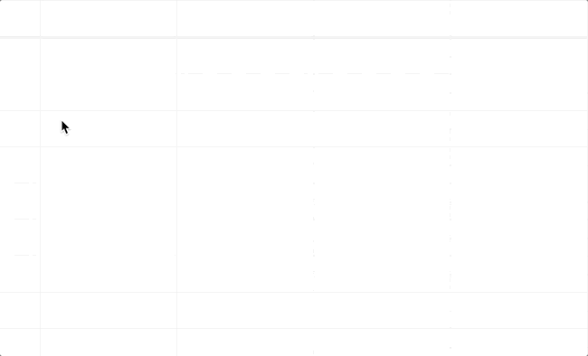
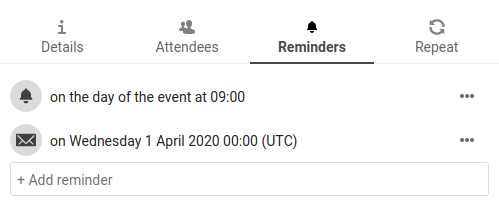

Oc'h implijout ar meziant Deiziataer
Note
Ar meziant deiziataer n'eo ket aotreet dre ziouer ha ret eo staliañ anezhañ adalek ar stal Meziantoù. Goulennit d'ho Merour.
Ar meziant Deiziataer Nextcloud a labour evel pep meziant deiziataer a c'heller kempredañ gant ho teiziataer ha darvoudoù Nextcloud .
Pa 'z it evit ar wech kentañ war ar meziant Deiziataer, un deiziataer dre ziouer a vo krouet evidoc'h.

Melestrañ ho teiziataer
Emporzhiañ un deiziataer
Ma ho peus c'hoant kas ho teiziataer hag e darvoudoù d'hoc'h azgoulenn Nextcloud, emporzhiañ a zo an dra aesañ d'ober.

Klikit war ar skeudenn-arventenn lakaet gant '''Arventennoù hag Emporzhiañ'' en diaz a-gleiz.
Goude bezañ kliket war ''+ Emporzhiañ Deiziataer'' eo posupl deoc'h choaz ur restr deiziataer pe muioc'h eus diabarzh hoc'h ardivink da bellkas.
Ar pellkas a c'hel kemer amzer, hervez brasder an deizataer da emporzhiañ.
Note
Ar meziant Deiziataer Nextcloud ne zoug nemet restroù ''.ics'' a glot gant iCalendar, displeget en RFC 5545.
Krouiñ un deiziataer nevez
Ma ho peus c'hoant staliañ un deiziataer nevez hep kas roadennoù kozh eus deiziataerioù all, gwelloc'h eo krouiñ un deiziataer nevez.

Klikit war ''+ Deiziataer Nevez'' er varenn-gostez a- gleiz.
Lakait un anv evit ho teiziataer nevez, da skouer "Labour", "Ti" pe "Studioù".
Goude bezañ kliket war ar checkmark, ho teiziataer nevez a zo krouet ha gallout a ra bezañ kempredet etrezek hoc'h ardivink, leuniet gant darvoudoù nevez ha rannet gant ho mignoned ha kenseurted.
Embann, Pellgargañ pe Lemel un Deiziataer
A-wechoù ho po c'hoant cheñch liv pe anv un deiziataer emporzhiet pe krouet diaraok. C'hont ho pefe ivez divroañ anezhañ d'ho lenner diabarzh pe lemel anezhañ da virviken.
Note
Ret eo deoc'h gouzout pa vez lamet un deiziataer ganeoc'h eo lamet da viken. Goude bezañ bet lamet, n'ez eus ket tu adtapout anezhañ ma n'ho peus backup diabarzh ebet.

Klikit war ar roll tri foent dezhañ eus an deiziataer mat.

Klikit war "Embann", "Pellgargañ" pe "Lemel"
Embann an deiziataer
Deiziataerioù a zo posupl embann dre ul liamm publik evit ma vefent gwelet (lennet-nemetken) gant implijourien all. Posupl eo deoc'h krouiñ ul liamm publik en ur zigeriñ ar roll rannan evit un deiziataer war « + » e-kichen « Rannan al liamm ». Ur wech krouet anezhañ e c'heller eilañ al liamm publik d'ur pouezer-paperioù pe kas dre bostel.
Bez' ez eus ivez un dra anvet « kod lestrañ » a ro un iframm HTML evit lestrañ ho teiziataer e pajennoù publik.
Multiple calendars can be shared together by adding their unique tokens to the end of an embed link. Individual tokens can be found at the end of each calendar's public link. The full address will look like
https://cloud.example.com/index.php/apps/calendar/embed/<token1>-<token2>-<token3>
To change the default view or date of an embedded calendar, you need to provide an url that look like https://cloud.example.com/index.php/apps/calendar/embed/<token>/<view>/<date>.
In this url you need to replace the following variables:
<token>with the calendar's token.<view>with one ofmonth,week,day,listMonth,listWeek,listDay. The default view ismonthand the normally used list islistMonth.<date>withnowor any date with the following format<year>-<month>-<day>(e.g.2019-12-28).
War ar bajenn bublik, posupl eo d'an implijourien kavout liammoù koumanantiñ da deiziataerioù ha pellgargañ an holl zeiziataerioù diouzhtu.
Koumanantiñ d'un Deiziataer
Posupl eo deoc'h koumanantiñ da deiziataerioù iCal e-barzh ho Nextcloud. en ur zougen ar standard etre-oberatadur (RFC 5545) e vez kenglotet deiziataerioù Nextcloud da re c'hGoogle, Apple iCloud ha kalz a servijourien-deiziataerioù evit eskemm ho teiziataerioù ganto, gant liammoù koumanantiñ en deiziataerioù embannet war azgoulennoù all Nextcloud, evel displeget a-raok.
Klikit war ''+ Koumanant Nevez'' er varenn-gostez a-gleiz.
Skrivit pe pegit liamm an deiziataer rannet ho peus c'hoant koumanantiñ outañ.
Echuet. Ho koumanant deiziataer a vo adnevesaet en un doare reoliek.
Note
Dre ziouer e vez freskaet ar c'houmanantoù bep sizhun. Cheñchet e c'hell bezañ gant ho merour.
Melestrañ darvoudoù
Krouiñ un darvoud nevez
Posupl eo krouiñ darvoudoù en ur glikañ el lec'h ma 'z eo raktreset an darvoud. Er gweled deiz pe sizhun an deiziataer e klikit, sachit ha laoskit ho logodenn a-us d'al lec'h m'emañ an darvoud o tremen.

Ar gweled miz en deus ezhomm eus ur c'hlik nemetken el lec'h an deiz.

After that, you can type in the event's name (e.g. Meeting with Lukas), choose the calendar in which you want to choose the event (e.g. Personal, Work), check and concretize the time span or set the event as all-day event.
Ma ho peus c'hoant embann munudoù diaraoget evel al Lec'h*, un Displegadenn, Perzhidi, Adgalv pe lakaat an darvoud da vezañ adlavaret, klikit war ar bouton "Muioc'h ..." evit digeriñ embanner diaraoget er varenn-gostez.
Note
M'ho peus c'hoant e vefe digoret embanner diaraoget ar varenn-gostez embann e lec'h ar popup embann darvoud, posupl eo deoc'h lakaat ur checkmark ''Tremen e-bioù an embanner darvoud simpl"" er pennad ''arventennoù hag Emporzhiañ'' ar meziant.
Klikañ war ar bouton ''Krouiñ'' a grouo un darvoud nevez.
Embann pe lemel un darvoud
If you want to edit or delete a specific event, you just need to click on it.
After that you will be able to re-set all event details and open the
advanced sidebar-editor by clicking on More.
Clicking on the Update-button will update the event. To cancel your changes, click on the close icon on top right of the popup or sidebar editor.
Ma vez digoret ar gweled er varenn-gostez ha pouezet war ar roll tri fik a-gostez an anv darvoud, un dibab divroañ ho peus evel restr ".ics" pe lemel an darvoud eus an deiziataer.

Kouviañ tud d'an darvoud
Tud a c'heller ouzhpennañ en darvoud evit lezel anezho gouzout ez int kouviet. Ur postel gwiriañ a vo resevet ganto ha posupl a vo dezho gwiriañ pe get ho pedadenn. Ar c'houvidi a c'hall bezañ implijourien hoc'h azgoulenn Nextcloud, darempredoù en ho levr-chomlec'h pe ur chomlec'h postel resis. Posupl eo deoc'h cheñch al live kouviañ rag-gouviañ, pe lemel ar gwiriañ postel evit ar c'houvidi.

Tip
Pa ouzhpennit kouviidi d'un darvoud Nextcloud, posupl eo deoc'h tizhout o zitouroù FreeBusy m'ez eo aotreet, ar pezh a sikouro ac'hanoc'h da choaz pegoulz lakaat an darvoud.
Attention
N'eo ket posupl da gas kouviadennoù nemet gant perc'henn an deiziataer, ha ket gant an dud eo bet rannet an deiziataer gante, pa vefent aotreet da embann pe get.
Assign rooms and resources to an event
Similar to attendees you can add rooms and resources to your events. The system will make sure that each room and resource is booked without conflict. The first time a user adds the room or resource to an event, it will show as accepted. Any further events at overlapping times will show the room or resource as rejected.
Note
Rooms and resources are not managed by Nextcloud itself and the Calendar app will not allow you to add or change a resource. Your Administrator has to install and possibly configure resource back ends before you can use them as a user.
Eñvorer Staliañ
Posupl eo deoc'h lakaat un eñvorer da gemenn ac'hanoc'h pa vez un darvoud. Ar stummoù kemenn douget evit ar poent a zo :
Kemennadennoù Postel
Kemennadennoù Nextcloud
Un eñvorer a zo posupl lakat d'un amzer resis tro dro d'un darvoud pe deiziad resis.

Note
Perc'henn an deiziataer ha tud pe strolladoù eo bet rannet gante an deiziataer ha gant un aotre embann o do kemennadennoù. Ma n'ho peus ket anezho mes e rankfec'h kaout anezho, eo ar merour en deus marteze lamet an aotre evit ho servjiour.
Note
Ma kempredit ho teiziataer gant ho ardivink hezoug pe ur c'hliant 3de-strollad, kavet e vo du-se ivez ar c'hemennadennoù.
Ouzhpennañ dibaboù o c'hoarvezout ingal
Un darvoud a c'hell bezañ lakaet evet "o c'hoarvezout ingal", pe a c'hell darvoud bemdez, bep sizhun, miz pe bloaz. Reolennoù resis a zo posupl kaout evit lakaat peseurt deiz er sizhun o tremen pe reolennoù all, evel pep pevare Merc'her e pep miz.
Posupl eo deoc'h lâr pegoulz e echu an darvoud ingal.

Trash bin
If you delete events, tasks or a calendar in Calendar, your data is not gone yet. Instead, those items will be collected in a trash bin. This offers you to undo a deletion. After a period which defaults to 30 days (your administration may have changed this setting), those items will be deleted permanently. You can also permanently delete items earlier if you wish.

The Empty trash bin buttons will wipe all trash bin contents in one step.
Tip
The trash bin is only accessible from the Calendar app. Any connected application or app won't be able to display its contents. However, events, tasks and calendars deleted in connected applications or app will also end up in the trash bin.
deiziataer deiz-ha-bloaz
An deiziataer deiz-ha-bloaz a zo krouet en un doare otomatik, ar pezh a dapo en un doare otomatik an darempred. An tu nemetañ evit embann an deiziataer a zo en ul lakaat ho tarempredoù gant o deiz-ha-bloaz. N'eo ket posupl embann an deiziataer deiz-ha-bloaz er meziant deiz-ha-bloaz.
Note
Ma ne welit ket an deiziataer deiz-ha-bloaz, diaotreet eo bet marteze gant ho merour war ho servijour.